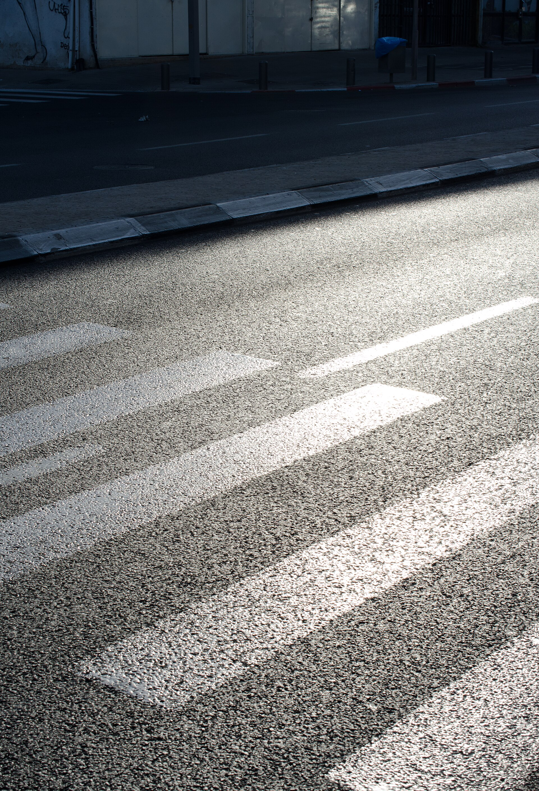

What number would this campaign be most tempted to lead with, the one that looks huge?
By the end of class you'll be able to tell a vanity metric from real impact, and you'll have a tool for it: an impact ladder that runs from reach at the bottom up to power at the top. We'll bring back Jodi Dean from Week 11 and her line that circulation is not change. Then you'll name the metrics that actually count for your own campaign. Thursday's module builds the framework out; today we argue it into shape together.
The uncomfortable question every organizer runs into sooner or later.
A 30-minute video made to make a Ugandan warlord famous enough to get him arrested by year's end. Around 100 million views in six days, the fastest a video had ever spread. Celebrities shared it. It was everywhere for about two weeks.
A neighborhood wanted a crosswalk where a kid had been hit. Forty neighbors signed a letter. Twelve showed up to two city council meetings and told the story out loud. A reporter wrote 200 words. The city built the crosswalk. Almost no one outside the neighborhood ever heard about it.

Hands up, then defend your vote to the room. What did each one actually change?
Reach: about 100 million views.
Felt like: the biggest thing ever.
What changed: Kony was never caught, and the group behind it folded within months.
Reach: about 40 people.
Felt like: a slow Tuesday.
What changed: the crosswalk got built and is still there.
A number that goes up and feels great but tells you nothing about whether anything changed. Likes, views, impressions, raw follower count.
For a cause it tends to be one of three things: behavior (someone did something), relationships (people you can reach again), power (a decision you can now affect).
Think back to the loop where posting can feel like doing something.
Start at the bottom rung. What can a platform hand you for free, the number that costs your audience nothing?
Push back on your own ladder. Where would a big view count genuinely matter?
Each pod takes one campaign, a viral petitiona local mutual-aid groupa national climate marcha small nonprofit's Instagrama campus walkout and fills all four boxes. Pick a spokesperson to report back.
What number would this campaign be most tempted to lead with, the one that looks huge?
Out in the real world, what changed because of it? Be specific, and be honest if the answer is "not much."
Which rung does that brag number really sit on, 1 through 5, and how do you know?
Name the one honest number this campaign should track instead, and say exactly how you'd count it.
Work these on your own, then we'll hear a few. This feeds straight into your P3 impact report.